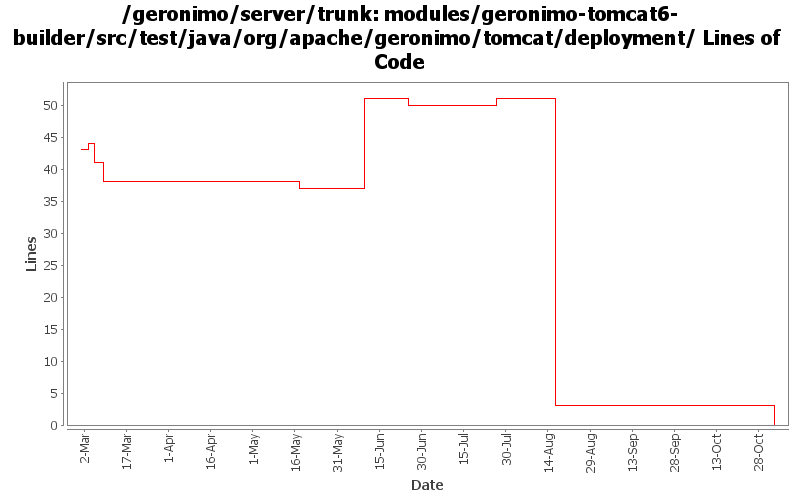

[root]/modules/geronimo-tomcat6-builder/src/test/java/org/apache/geronimo/tomcat/deployment

| Author | Changes | Lines of Code | Lines per Change |
|---|---|---|---|
| Totals | 23 (100.0%) | 33 (100.0%) | 1.4 |
| djencks | 6 (26.1%) | 27 (81.8%) | 4.5 |
| jgenender | 11 (47.8%) | 5 (15.2%) | 0.4 |
| gawor | 1 (4.3%) | 1 (3.0%) | 1.0 |
| prasad | 5 (21.7%) | 0 (0.0%) | 0.0 |
GERONIMO-3565. Modules distributed amongst framework/modules and plugins
0 lines of code changed in 5 files:
GERONIMO-3416, start on moving common bits of deployment test infrastructure into kernel test jar. Might also fix GERONMO-3415
1 lines of code changed in 1 file:
Get Tomcat connectors to runb in container
4 lines of code changed in 1 file:
GERONIMO-1470 make it clearer that our context root settings override those in application.xml
1 lines of code changed in 1 file:
GERONIMO-2687. Don't construct default and run-as subjects, get them from a login module. Also creates a separate server-security-config for the security config stuff you probably want to change. Also fixes lots of security problems, including mdb run-as handling.
22 lines of code changed in 2 files:
expose Module instead of the just the module jar file
1 lines of code changed in 1 file:
GERONIMO-2943 add ModuleBuilderExtensions to web module builders
3 lines of code changed in 2 files:
Add test for application.xml vs default generated plan
0 lines of code changed in 2 files:
Fix deployment issue
0 lines of code changed in 1 file:
GERONIMO-2921 - Force the Tomcat builder to create a default web.xml if one does not already exist
1 lines of code changed in 4 files:
GERONIMO-2908 - Deploy JAX-WS services without webservices.xml
0 lines of code changed in 3 files: